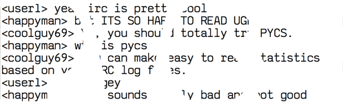

<LpSamuelm> An IRC statistics generator written in Python.
What is PYCS?
PYCS is a very small (and fast!) IRC statistics generator written in Python. It takes your IRC log files, processes them for a short while, and outputs a nice HTML page that you can easily share on your web server, or just have a look at locally. Have an example!
PYCS turns this...
<mcdruid> it doesnt fit in there
<hunter2> Dude.
<hunter2> If force doesn't work, use more force.
<xXmanbroXx> hey uh hunter?? my comptuer haas a virst
<mcdruid> why did we even let this guy in
<xXmanbroXx> hehe gotu nothings wrong.
<mcdruid> oh my FREAKIN GOD SHUT UP
<Hatman> Sorry toi nterrupt but anyone seen my dog
<xXmanbroXx> nope
<hunter2> Uh.
<hunter2> Nobody here knows you IRL.
<hunter2> So no, probably not
<Hatman> Oh wrong channel, should have posted in #friendsofhatman.
<mcdruid> you have your own channel?
<mcdruid> full of people?
<xXmanbroXx> gz
<mcdruid> nvm just checked it out
<mcdruid> no one there but hatman.
* Hatman has left
<hunter2> That's kind of sad.
<mcdruid> oh come on can we drop this charade?
<mcdruid> no one has this large a browser window.
<mcdruid> this isn't even a real chat log.
<hunter2> Now that you mention it...
<hunter2> I've just written 23 lines of dialogue between people that don't exist.
* hunter2 sighs
<mcdruid> great
<xXmanbroXx> gg
<hunter2> And why/how are you even reading this!?
<hunter2> Dude.
<hunter2> If force doesn't work, use more force.
<xXmanbroXx> hey uh hunter?? my comptuer haas a virst
<mcdruid> why did we even let this guy in
<xXmanbroXx> hehe gotu nothings wrong.
<mcdruid> oh my FREAKIN GOD SHUT UP
<Hatman> Sorry toi nterrupt but anyone seen my dog
<xXmanbroXx> nope
<hunter2> Uh.
<hunter2> Nobody here knows you IRL.
<hunter2> So no, probably not
<Hatman> Oh wrong channel, should have posted in #friendsofhatman.
<mcdruid> you have your own channel?
<mcdruid> full of people?
<xXmanbroXx> gz
<mcdruid> nvm just checked it out
<mcdruid> no one there but hatman.
* Hatman has left
<hunter2> That's kind of sad.
<mcdruid> oh come on can we drop this charade?
<mcdruid> no one has this large a browser window.
<mcdruid> this isn't even a real chat log.
<hunter2> Now that you mention it...
<hunter2> I've just written 23 lines of dialogue between people that don't exist.
* hunter2 sighs
<mcdruid> great
<xXmanbroXx> gg
<hunter2> And why/how are you even reading this!?
...into this (albeit more and larger).
hunter2
8538 lines · 96 actions · 983 swears
"It's a simple question of weight ratios."
"It's a simple question of weight ratios."
mcdruid
7830 lines · 143 actions · 72 swears
"do it batman style"
"do it batman style"
Total number of lines in #pycs:
25379
Lines by time posted
0 - 6: 28.3% 6 - 12: 8.7%
12 - 18: 27.8%
6 - 12: 8.7%
12 - 18: 27.8%
 18 - 0: 35.2%
18 - 0: 35.2%
Mouseover for details
0 - 6: 28.3%
6 - 12: 8.7%
12 - 18: 27.8%
18 - 0: 35.2%
Mouseover for details
How do I use it?
There are quite a few documents that will aid you in using (and adding to) PYCS. The most useful one is the readme that is shipped with PYCS, which you can read on GitHub too.Besides all of the functionality in creating chat statistics, you can help create, too! If you happen to have an IRC log format that is not yet supported by PYCS, it is incredibly easy to create your own! Refer to the readme for details. For the more artistically inclined, it is not only possible, but not even all that hard to create your own themes for PYCS. Again, refer to the readme for details.
Have fun!